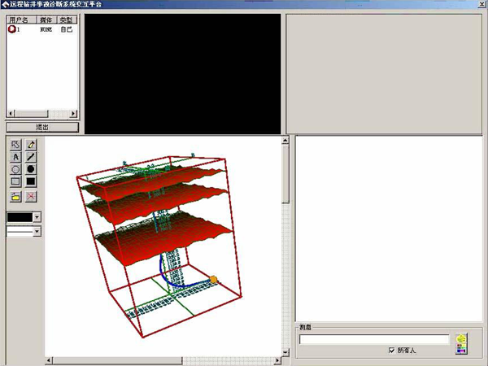

Search
虚拟仿真实验教学资源
钻井工程临境地质模拟
虚拟仿真实验教学资源
钻井工程临境地质模拟
石油钻井是一项隐蔽性地下工程，地质条件复杂多变，钻井过程中潜在一些风险和不确定性因素，利用人工智能方法分析、处理、解释不精确或不确定的随钻实时信息，建立直观的三维地质模型和井眼轨迹模型，对于提高钻井效率、减少钻井风险、优化作业过程、降低钻井成本具有十分重要的意义。“钻井工程临境地质模拟及三维井眼轨迹显示系统”正是基于这样的考虑被研究、开发并应用于国内各大油田以及我校的钻井工程教学实践中，其目的是根据地震、电测、随钻测量、随钻测井、综合录井、地质录井等提供的各种信息，从传统的数据分析、处理、解释出发，利用虚拟现实技术对地质分层、储层、井眼轨迹、靶区等进行三维可视化模拟，建立地质导向钻井虚拟环境，为钻井人员提供一个临境式可视化环境，可直观地看到地下地层及钻井轨迹的真实场景，提供全景式的数据分析，真正实现三维数据的全三维解释。主要内容包括以下几方面：
①地层三维可视化：以便清楚地看到地层的起伏，使钻井技术人员对地下情况及钻进过程有直观的了解，达到根据地层构造的特点调整钻井工艺的目的（如图10所示）。
②老井井眼轨迹三维可视化：便于比较老井眼与新井眼轨迹的位置，计算轨迹间的最近距离，达到防碰的目的。
③设计轨道三维可视化：将设计轨道三维可视化，使钻井技术人员可以观察、分析实钻轨迹与设计轨道的偏差，以便调整钻井工艺。
④靶点三维可视化：将设计的靶点三维可视化，可以对靶点区域进行放大，当钻井轨迹到了靶点附近时，使技术人员能够准确地观察和控制轨迹走向（如图12所示）。
⑤实钻轨迹三维可视化：根据钻井参数采集仪器传递的数据，实时三维立体显示实钻轨迹，使钻井技术人员可以随时直观地观察轨迹走向，了解钻井深度，以及轨迹穿越地层的情况等（如图12所示）。

图1 地层三维可视化
图2 防碰计算
图3 靶点三维可视化
图4 实钻轨迹三维可视化
该系统可以直观地展示地下地层及钻井轨迹等真实场景，提供了与钻井现场作业一致的虚拟仿真环境，有助于学生直观理解和感受钻井过程中井眼穿越的地层情况，掌握定向井作业的技术难点及设计过程，对于提高学生对于地质模型和井眼轨道等知识点的理解具有十分重要的现实意义。该系统所支持的课程与实验项目如表1所示。
临境地质模拟及三维井眼轨迹显示系统支持的课程与实验项目
| 序号 | 课程名称/教学时数 | 实验项目/实验时数 | 应用方式 |
|---|---|---|---|
| 1 | 钻井工程（双语）/54 | 测斜计算/4 | 辅助计算 |
| 2 | 石油工业概论/32 | 定向井/2 | 虚拟演示 |
| 3 | 钻井工程课程设计/2周 | 井眼轨道设计/8 | 辅助设计 |
| 4 | 钻井新技术/24 | 水平井设计/4 | 辅助设计 |
| 5 | 研究生现代钻井技术/24 | 水平井设计/4 | 辅助设计 |